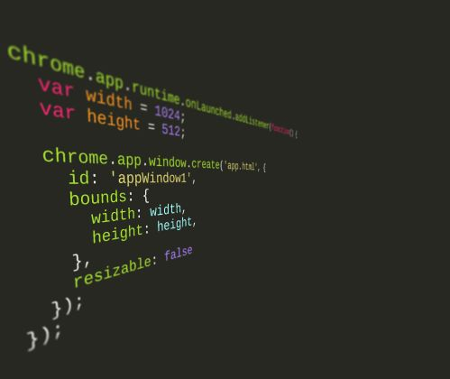
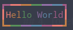

你的代码牛逼的一塌糊涂！

以下4点助你写出一塌糊涂的代码。。
1. Marmoset
像下面的图片用在一些编程文章的封面上很合适。而且看起来很有趣（逼格）。
看起来很有逼格的代码截图
要生成这样一张立体代码图并不复杂，只需要一个浏览器小工具：Marmoset
Marmoset
Marmoset下载地址：Chrome 商店
https://chrome.google.com/webstore/detail/marmoset/npkfpddkpefnmkflhhligbkofhnafieb?utm_source=chrome-app-launcher-info-dialog
打开应用之后可以用鼠标调整代码角度。根据不同主题有不同的效果，还有相应的语法高亮。
自由调整代码角度
模糊效果的截图：

模糊效果
2. Figlet
第二个工具是一个Linux下的命令行工具，我们经常会看到一些终端工具有一个字符Logo，随便举个例子：
# ptunnel.sh -h
------------------------------------------------------------------------------
____ _ _ ____ _ _ _
| _ \| |_ _ _ _ __ _ __ ___| | / ___|| |__ ___| | |
| |_) | __| | | | '_ \| '_ \ / _ \ | \___ \| '_ \ / _ \ | |
| __/| |_| |_| | | | | | | | __/ | ___) | | | | __/ | |
|_| \__|\__,_|_| |_|_| |_|\___|_| |____/|_| |_|\___|_|_|
Email: i@zuolan.me Blog: https://zuolan.me
------------------------------------------------------------------------------
一个关于 Ptunnel 部署以及代理管理的脚本。不加参数直接运行脚本即可连接。
可选参数 - 说明
------------------------------------------------------------------------------
-c - 断线自动重连，自动修复断开的连接。
-m - 查看代理运行情况。
-n - 使用 -n [enp3s0|wlp2s0|eth0|wlan0] 指定网卡可以分享代理。
-p - 选择本地 privoxy 转发的端口。（默认配置/etc/privoxy/config）
-k - 重启 sshd 进程。（当 ssh 无法连接时使用。）
-l - 安装本地守护容器。
-s - 安装服务器守护进程。
-h - 显示帮助信息。详细说明阅读 README 文件。
这些Logo可以通过Figlet生成：
快速生成字符画
安装这个工具没什么难度，包管理工具直接安装即可。
sudo apt/dnf install -y figlet
命令showfigfonts可以查看所有字体。
例如指定字体：
指定字体
来点好玩的，显示时间：
3. Boxes
这个工具提供了 n 种样式，例如各种动物等，然后你输入的字符就放在这些图案的内部空白处。
安装依旧是直接安装，仅限Linux系统。
使用boxes -l列出所有的样式。echo [text] | boxes -d [style name]
下面用 dog 这个样式来显示：
# echo "Hello World" | boxes -d dog
__ _,--="=--,_ __
/ \." .-. "./ \
/ ,/ _ : : _ \/` \
\ `| /o\ :_: /o\ |\__/
`-'| :="~` _ `~"=: |
\` (_) `/
.-"-. \ | / .-"-.
.---{ }--| /,.-'-.,\ |--{ }---.
) (_)_)_) \_/`~-===-~`\_/ (_(_(_) (
( Hello World )
) (
'---------------------------------------'
这个工具一般用于代码中的开头注释什么的地方，比较显眼有趣。
,
/\^/`\
| \/ |
| | | SPRING IS IN THE AIR! jgs
\ \ / _ _
'\\//' _{ ' }_
|| joan stark { `.!.` }
|| <spunk1111@juno.com> ',_/Y\_,'
|| , {_,_}
|\ || |\ |
| | || | | ASCII ART GALLERY: (\| /)
| | || / / <http://www.geocities.com/SoHo/7373/> \| //
\ \||/ / |//
`\\//` \\ \./ \\ / // \\./ \\ // \\ |/ /
^^^^^^^^^^^^^^^^^^^^^^^^^^^^^^^^^^^^^^^^^^^^^^^^^^^^^^^^^^^^^^
4. Toilet
这个可以输出更丰富的样式，它比 figlet 命令的效果更有艺术感。
echo "Hello World" | toilet -f term -F border --gay

可以有颜色
toilet -f mono12 -F metal Linux
多种样式
while true; do echo "$(date '+%D %T' | toilet -f term -F border --gay)"; sleep 1; done
彩色的字符画
activate-power-mode
打代码时有没有拯救世界的感觉
这个大家都知道的我就不说了，直接上链接：
Atom
https://atom.io/packages/activate-power-mode
Visual Studio
https://marketplace.visualstudio.com/items?itemName=LiamMorrow.PowerMode
Brackets
https://github.com/Equals182/brackets-power-mode
Codemirror
https://github.com/chinchang/code-blast-codemirror
IDEA
https://github.com/ViceFantasyPlace/activate-power-mode
JavaScript
https://github.com/disjukr/activate-power-mode
VIM
https://github.com/mattn/vim-particle
Visual Studio
https://github.com/LiamMorrow/Visual-Studio-Power-Mode
Windows
https://github.com/if1live/ParticleOnTextCursor
XCode有几个，随便挑一个吧：
https://github.com/poboke/ActivatePowerMode
https://github.com/qfish/XActivatePowerMode
https://github.com/Dawn-/CoderPower
Visual Studio Code 暂时不支持
作者：左蓝
原文：
https://www.jianshu.com/p/4c9d5393ddb1

推荐阅读